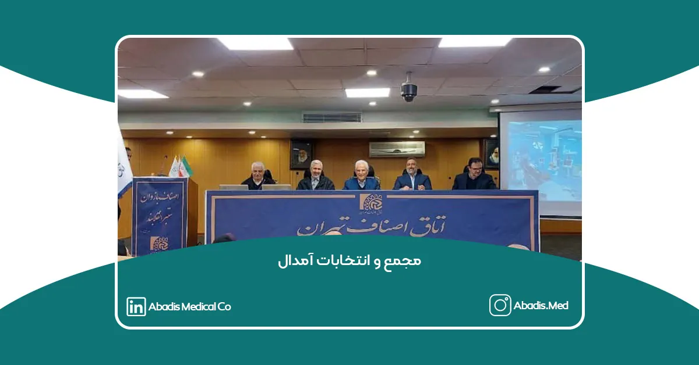
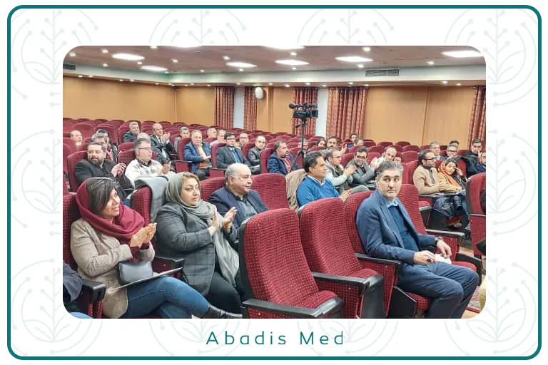
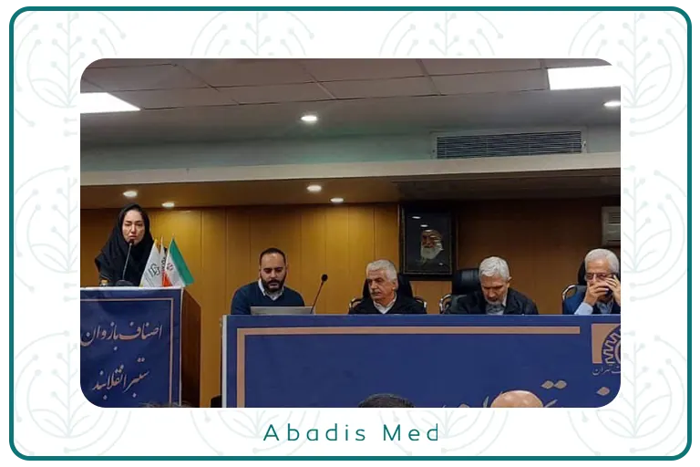
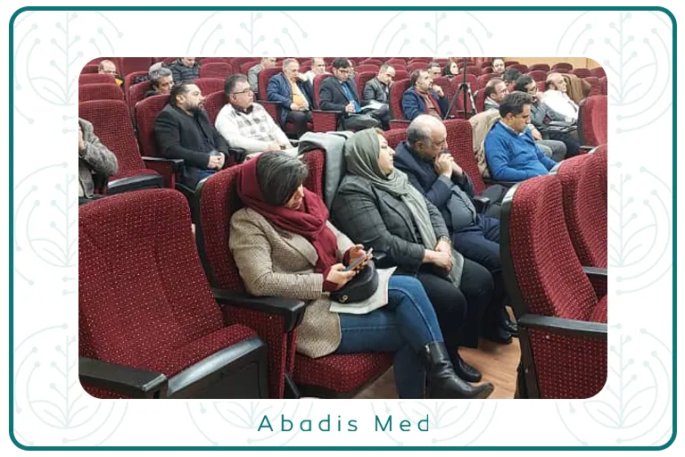
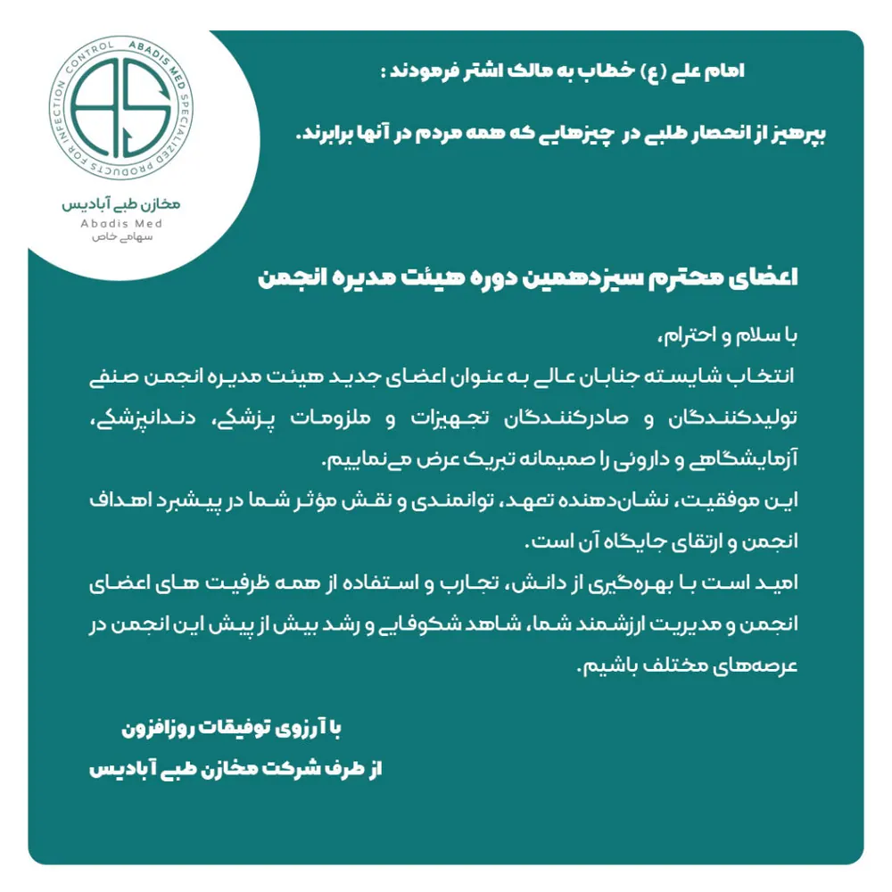

مجمع و انتخابات انجمن صنفی تولیدکنندگان و صادرکنندگان تجهیزات و ملزومات پزشکی، دندانپزشکی، آزمایشگاهی و دارویی (آمدال)
انتخابات انجمن صنفی تولیدکنندگان و صادرکنندگان تجهیزات و ملزومات پزشکی، دندانپزشکی، آزمایشگاهی و دارویی (AMEDAL) در روز دوشنبه 1 بهمن 1403 در اتاق اصناف تهران برگزار شد. این رویداد با حضور 90 عضو از مجموع 415 عضو انجمن رسمیت یافت و در فضایی پرانرژی و مشارکتمحور برگزار گردید. نتیجه این انتخابات، مشخص شدن اعضای جدید هیئت مدیره و بازرسهای انجمن بود.

کاندیدای این دوره از انتخابات انجمن آمدال شامل خانم ها قاسمی و یزدانی، آقایان اطیابی، براتی، سعیدلو، روحی نیاسر، ضیائی، عرفانیان شهابی، علایی طباطبایی، محمدی، مرتضوی، مستعلی پور، معروفی، مفیدی شمیرانی، واحدی، ریاحی و شاهمرادی مقدم بودند. رقابت میان این افراد نشاندهنده حضور چهرههای برجسته و متخصص در صنعت تجهیزات پزشکی است.
اعضای هیئت مدیره منتخب انجمن آمدال
در این دوره، اعضای هیئت مدیره منتخب انجمن آمدال شامل خانم قاسمی، آقایان ضیایی، سعیدلو، مستعلیپور، مفیدی، معروفی و براتی هستند. آقای مصطفی ریاحی نیز با 66 رأی به عنوان بازرس اصلی و آقای شاهمرادی با 29 رأی به عنوان بازرس علیالبدل انتخاب شدند.
دستاوردهای انجمن آمدال در دوره دوازدهم
سرکارخانم مریم قاسمی، دبیر انجمن، در گزارشی عملکرد هیئت مدیره دوره دوازدهم (1401 تا 1403) را تشریح کرد. او به برگزاری 82 جلسه هیئت مدیره و 230 جلسه برونسازمانی اشاره کرد و از امضای تفاهمنامهای برای برگزاری نمایشگاه ایران مِد به مدت پنج سال خبر داد.
افتتاح شوروم دائمی تجهیزات پزشکی، برگزاری پاویون انجمن در نمایشگاههای آلمان و روسیه از دیگر دستاوردهای این دوره بود. همچنین ثبت شرکت تعاونی تولیدکنندگان برای تأمین مواد اولیه اعضای انجمن، یکی از گامهای اساسی در راستای حمایت از تولیدکنندگان بوده است.

آغاز فعالیت شرکت تعاونی انجمن برای تأمین مواد اولیه
جناب آقای مصطفی ریاحی، بازرس اصلی انجمن، در سخنرانی خود اعلام کرد که شرکت تعاونی انجمن پس از مجمع آغاز به کار خواهد کرد. این شرکت با هدف تأمین مواد اولیه موردنیاز اعضای انجمن تأسیس شده است و سهام آن به صورت 49 درصد متعلق به انجمن و 51 درصد متعلق به اعضا است. این اقدام میتواند به تقویت توان تولیدکنندگان و کاهش هزینههای تولید کمک کند.
الحاق انجمن به اتاق بازرگانی ایران در مراحل نهایی
یکی از موضوعات مهمی که در نشست مجمع عمومی مطرح شد، الحاق انجمن تولیدکنندگان و صادرکنندگان تجهیزات و ملزومات پزشکی، دندانپزشکی، آزمایشگاهی و دارویی به اتاق بازرگانی ایران بود. دبیر انجمن اعلام کرد که آمدالبه اتاق بازرگانی، صنایع، معادن و کشاورزی ایران پیوسته است و تنها برخی مراحل حقوقی جزئی باقی مانده است.
تأکید بر اولویت مطالبات مالی اعضا
جناب آقای عباس مه، رئیس مجمع آمدال تأکید کرد که اولویت اصلی انجمن باید پیگیری مطالبات مالی اعضا باشد، زیرا بدون تأمین منابع مالی کافی، شرکتها انگیزه و توان لازم برای فعالیت مؤثر را نخواهند داشت.
نقش رسانهها در تقویت جایگاه تولیدکنندگان
در این جلسه همچنین پیشنهاد شد که انجمن تولیدکنندگان و صادرکنندگان تجهیزات و ملزومات پزشکی، دندانپزشکی، آزمایشگاهی و دارویی ارتباط خود را با رسانههای تخصصی حوزه تجهیزات پزشکی تقویت کند تا بتواند صدای تولیدکنندگان را به شکل مؤثرتری به گوش مسئولان و مخاطبان برساند. این پیشنهاد نشاندهنده اهمیت تعامل با رسانهها برای پیشبرد اهداف انجمن و اطلاعرسانی مناسب است.
حضور نماینده مخازن طبی آبادیس در انتخابات انجمن تولیدکنندگان
جناب آقای مهندس نوید حسنعلی، رئیس هیئت مدیره و معاونت بازرگانی و فروش شرکت مخازن طبی آبادیس، نیز در انتخابات انجمن تولیدکنندگان و صادرکنندگان تجهیزات و ملزومات پزشکی، دندانپزشکی، آزمایشگاهی و دارویی حضور داشتند.
حضور ایشان نشاندهنده اهمیت تعامل شرکتهای پیشرو با انجمن آمدال برای تقویت صنعت تجهیزات پزشکی در ایران است. مشارکت فعال شرکتهای بزرگ مانند شرکت دانش بنیان مخازن طبی آبادیس، نقش کلیدی در پیشبرد اهداف جمعی و ارتقای سطح کیفیت محصولات داخلی دارد.

پیام تبریک مدیران شرکت آبادیس به اعضای محترم سیزدهمین دوره هیئت مدیره انجمن تولیدکنندگان و صادرکنندگان تجهیزات و ملزومات پزشکی، دندانپزشکی، آزمایشگاهی و دارویی
امام علی (ع) خطاب به مالک اشتر فرمودند:
بپرهیز از انحصار طلبی در همه چیزهایی که همه مردم در آنها برابرند.
اعضای محترم سیزدهمین دوره هیئت مدیره انجمن صنفی تولیدکنندگان و صادرکنندگان تجهیزات و ملزومات پزشکی، دندانپزشکی، آزمایشگاهی و دارویی
با سلام و احترام، انتخاب شایسته جنابان عالی به عنوان اعضای جدید هیئت مدیره انجمن تولید را صمیمانه تبریک عرض مینماییم.
این موفقیت، نشاندهنده تعهد، توانمندی و نقش مؤثر شما در پیشبرد اهداف انجمن و ارتقای جایگاه آن است.
امید است با بهرهگیری از دانش، تجارب و استفاده از همه ظرفیت های اعضای انجمن و مدیریت ارزشمند شما، شاهد شکوفایی و رشد بیش از پیش این انجمن در عرصههای مختلف باشیم.
با آرزوی توفیقات روزافزون
